Biaya, RAB, Material, Tahapan Konstruksi & Perizinan (Edisi 2026)
📌 Pendahuluan: Peluang Emas Bisnis Lapangan Padel
Olahraga padel sedang mengalami booming luar biasa di Indonesia. Dari Jakarta, Bekasi, Tangerang, Bandung, Surabaya, hingga Bali, permintaan akan lapangan padel terus melonjak. Data terkini menunjukkan bahwa okupansi venue padel di Jakarta mencapai 70–99% pada jam prime time, dan diperkirakan akan ada 700+ klub padel beroperasi di Indonesia pada tahun 2026.
Ini adalah peluang investasi yang sangat menjanjikan. Tapi pertanyaan besarnya: bagaimana cara membangun lapangan padel yang benar? Berapa biayanya? Apa saja material yang dibutuhkan? Bagaimana urusan perizinan?
Artikel ini akan menjawab SEMUA pertanyaan tersebut secara detail, langkah demi langkah. Cocok untuk:
- ✅ Investor yang ingin membuka bisnis lapangan padel
- ✅ Pengusaha properti yang ingin diversifikasi usaha
- ✅ Pemilik klub olahraga yang ingin menambah fasilitas
- ✅ Siapa pun yang ingin tahu biaya pembuatan lapangan padel secara lengkap
📊 Bab 1: Prospek Bisnis Lapangan Padel 2026 — Apakah Masih Menguntungkan?
Sebelum membahas teknis pembangunan, penting untuk memahami prospek bisnis terlebih dahulu.
📈 Data Pasar Terkini
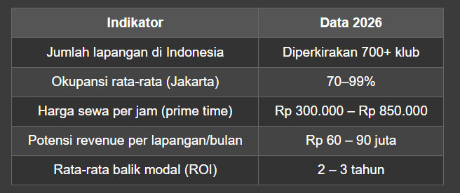
💡 Sumber Pendapatan Bisnis Lapangan Padel
1. Sewa lapangan (pay-to-play) — Sumber utama
2. Kafe / F&B — Meningkatkan revenue per kunjungan hingga Rp 450.000
3. Keanggotaan (membership) — 50–60% pendapatan untuk beberapa venue
4. Kelas pelatihan & coaching — Untuk semua usia
5. Turnamen & event — Menarik pengunjung dan sponsor
6. Retail perlengkapan padel — Raket, bola, sepatu, aksesoris
7. Sponsor & brand partnership — Brand olahraga, minuman, dll.
⚠️ Tantangan yang Perlu Diwaspadai
- Persaingan meningkat — Banyak pemain baru masuk pasar
- Risiko oversupply — Terutama di Jabodetabek
- Perizinan — Banyak venue kena segel karena tidak punya PBG
- Keberlanjutan — Padel harus dibangun sebagai ekosistem, bukan sekadar tren
> Kesimpulan: Bisnis lapangan padel masih sangat prospektif, asalkan dilakukan dengan perencanaan matang, lokasi strategis, dan ekosistem yang kuat.
🏟️ Bab 2: Ukuran & Spesifikasi Lapangan Padel Standar Internasional
Ini adalah fondasi dari seluruh proses pembangunan. Jika ukuran tidak sesuai standar, lapangan tidak akan nyaman dimainkan dan tidak bisa dipakai untuk turnamen resmi.
📐 Dimensi Utama (Standar FIP)
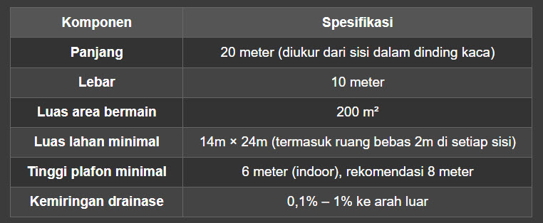
🧱 Spesifikasi Material Wajib
1. Dinding Kaca (Tempered Glass)
- Ketebalan: 10–12 mm (standar 12 mm untuk model premium)
- Tinggi dinding belakang: 3 meter kaca + 1 meter wire mesh (total 4 meter)
- Tinggi dinding samping: 3 meter kaca (bagian belakang), menurun ke depan
- Jumlah panel: 18 panel (ukuran 2m × 3m per panel)
- Jenis: Tempered glass explosion-proof (pecah menjadi butiran kecil, tidak tajam)
- Sistem mounting: Kaca connector stainless steel, distribusi beban ke struktur baja
2. Struktur Rangka Baja
- Material: Baja galvanis Q235 steel
- Dimensi crossbeam: 50mm × 100mm
- Lapisan: Powder coating anti karat
- Umur pakai: 15–20 tahun dengan perawatan minimal
3. Lantai & Rumput Sintetis
Pondasi: Beton bertulang K-250, tebal 15 cm
Shockpad: Lapisan peredam benturan di bawah rumput
Rumput sintetis:
- Tinggi serat (pile height): 12–15 mm
- Material: PE + PP (Polyethylene + Polypropylene)
- Kepadatan: 58.800 jahitan per m²
- Kekuatan benang: 8.800 Dtex
- Backing: Triple Layer (Double PP Cloth + Mesh + SBR Latex)
Infill: Pasir silika ±3.000 kg per lapangan
4. Net / Jaring
- Lebar: 10 meter
- Tinggi di tengah: 88 cm
- Tinggi di ujung: 92 cm
- Material: Nilon/poliester tahan UV
5. Sistem Pencahayaan
- Jenis: LED olahraga 5000–6000K
- Jumlah: 8–12 unit per lapangan
- Daya: 100–200 watt per unit
- Tinggi tiang: 6 meter
- Intensitas: Minimal 500 lux (rekomendasi 400–600 lux)
6. Pagar Kawat (Wire Mesh)
- Material: Kawat baja berlapis powder coating
- Ukuran lubang: 50mm × 50mm
- Diameter kawat: 3–4 mm
💰 Bab 3: Biaya Pembuatan Lapangan Padel — RAB Lengkap 2026
Ini adalah bagian yang paling banyak dicari oleh calon investor. Berikut rincian biaya pembuatan lapangan padel yang lengkap dan realistis.
💵 Estimasi Total Biaya per Lapangan
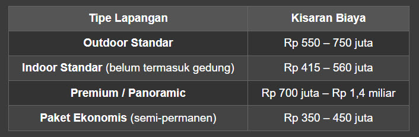
📋 RAB (Rencana Anggaran Biaya) Detail
Berikut rincian RAB lapangan padel untuk 1 unit outdoor standar:
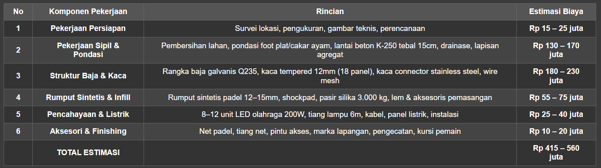
> Catatan: Biaya di atas belum termasuk:
- Pembelian lahan (sangat bervariasi tergantung lokasi)
- Bangunan gedung (untuk indoor)
- Fasilitas tambahan (kafe, ruang ganti, toilet, lounge, parkir)
- Biaya perizinan
- Biaya arsitek & konsultan
💰 Estimasi Investasi untuk Klub Padel (Multi-Court)
Jika Anda ingin membangun klub padel dengan beberapa lapangan, berikut estimasinya:
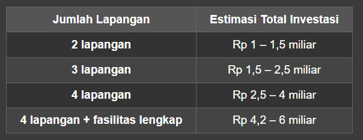
🔍 Faktor yang Mempengaruhi Biaya
- Lokasi proyek — Biaya logistik material lebih tinggi di daerah terpencil
- Kondisi tanah — Lahan berbatu atau berkontur butuh persiapan lebih mahal
- Indoor vs Outdoor — Outdoor butuh drainase; indoor butuh bangunan & AC
- Kualitas material — Kaca impor vs lokal, rumput grade A vs standar
- Skala proyek — Semakin banyak lapangan, semakin efisien biaya per unit
- Fasilitas tambahan — Lounge, kafe, VIP room, sauna, ice bath, dll.
💡 Tips Menghemat Biaya Tanpa Menurunkan Kualitas
- ✅ Bandingkan harga dari minimal 3 kontraktor spesialis
- ✅ Gunakan material lokal untuk komponen non-kritis
- ✅ Bangun beberapa lapangan sekaligus untuk efisiensi mobilisasi
- ✅ Pilih sistem pencahayaan LED hemat energi
- ✅ Buat RAB yang detail sejak awal untuk hindari pembengkakan
- ✅ Pertimbangkan sistem knock-down/prefab untuk struktur baja
🏗️ Bab 4: Tahapan Konstruksi Lapangan Padel — Langkah Demi Langkah
Berikut panduan lengkap cara membangun lapangan padel dari awal hingga selesai:
📍 Tahap 1: Survei & Studi Kelayakan Lokasi (1–2 Minggu)
Sebelum memulai konstruksi, lakukan survei menyeluruh:
- ✅ Aksesibilitas — Mudah dijangkau kendaraan?
- ✅ Kondisi tanah — Butuh timbunan atau tidak?
- ✅ Drainase — Risiko banjir? Sistem pembuangan air?
- ✅ Listrik — Daya mencukupi untuk pencahayaan?
- ✅ Zonasi — Apakah lokasi termasuk kawasan komersial?
- ✅ Potensi pasar — Apakah ada cukup pemain di sekitar?
- ✅ Kompetitor — Berapa banyak lapangan padel di radius 5 km?
📐 Tahap 2: Desain, Spesifikasi & RAB (2–4 Minggu)
Setelah lokasi dinyatakan layak:
1. Buat desain lapangan (layout, orientasi, indoor/outdoor)
2. Tentukan spesifikasi material (kaca, baja, rumput, lampu)
3. Susun RAB detail (seperti tabel di Bab 3)
4. Gambar teknik arsitektur & struktur
5. Konsultasi dengan kontraktor berpengalaman
> Tips: Orientasi lapangan outdoor sebaiknya Utara-Selatan untuk menghindari silau matahari.
🏗️ Tahap 3: Pengurusan Perizinan (1–3 Bulan)
Ini adalah tahap KRUSIAL yang sering diabaikan! Banyak lapangan padel kena segel karena izin tidak lengkap. Berikut dokumen yang wajib dimiliki:
5 IZIN WAJIB SEBELUM BANGUN:
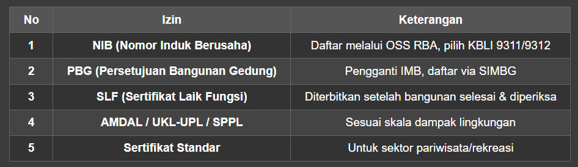
> ⚠️ Peringatan: Tanpa PBG, lapangan Anda bisa disegel, didenda hingga 20% nilai bangunan, bahkan pidana 5 tahun jika terjadi kecelakaan! Data Maret 2026 menunjukkan hanya 212 dari 397 fasilitas padel di Jakarta yang memiliki PBG.
🚧 Tahap 4: Pekerjaan Sipil & Pondasi (3–4 Minggu)
Langkah-langkahnya:
- Pembersihan lahan — Buang rumput, batu, sampah
- Perataan tanah — Grading sesuai kemiringan drainase
- Pondasi — Foot plat / cakar ayam untuk struktur baja
- Pengecoran lantai — Beton K-250, tebal 15 cm, dengan reinforced steel mesh
- Drainase — Saluran keliling dan lubang sudut
- Pengeringan — Tunggu beton benar-benar kering (minimal 7–14 hari)
🔩 Tahap 5: Pemasangan Struktur Baja & Kaca (3–4 Minggu)
- Pasang rangka baja galvanis — Tiang, crossbeam, bracing
- Pasang kaca tempered — Panel per panel, dengan kaca connector
- Pasang wire mesh — Di atas dinding kaca
- Pasang pintu akses — Minimal 2 pintu
> Catatan: Pemasangan kaca harus dilakukan oleh tenaga ahli karena risiko pecah dan keselamatan kerja.
🌱 Tahap 6: Pemasangan Rumput Sintetis (1–2 Minggu)
- Pasang shockpad — Lapisan peredam benturan
- Gelar rumput sintetis — Sesuai arah serat
- Sambung rumput — Dengan lem khusus dan joining tape
- Tabur pasir silika — ±3.000 kg, ratakan dengan sikat khusus
- Finishing — Potong kelebihan, rapikan tepi
💡 Tahap 7: Instalasi Pencahayaan & Listrik (1 Minggu)
- Pasang tiang lampu — 4 tiang di sudut lapangan
- Pasang lampu LED — 8–12 unit, arahkan ke lapangan
- Instalasi kabel & panel — Pastikan grounding aman
- Uji coba — Ukur intensitas cahaya minimal 500 lux
🎯 Tahap 8: Pemasangan Net & Aksesori (3–5 Hari)
- Pasang tiang net — Baja galvanis, kokoh
- Pasang net — Tinggi 88 cm tengah, 92 cm tepi
- Marka lapangan — Garis servis, garis tengah, garis batas
- Pasang kursi pemain — 4 kursi (2 di setiap sisi)
- Papan skor — Opsional, untuk turnamen
✅ Tahap 9: Finishing & Uji Coba (1 Minggu)
- Pembersihan akhir — Lapangan, kaca, area sekitar
- Pengecatan — Sentuhan akhir, marka parkir, dll.
- Uji coba permainan — Mainkan beberapa game untuk cek kualitas
- Evaluasi — Perbaiki jika ada kekurangan
- Serah terima — Dari kontraktor ke pemilik
📅 Timeline Total Pembangunan
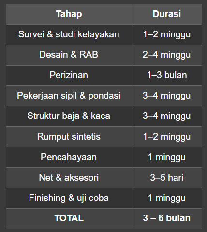
🧱 Bab 5: Perbandingan Material — Pilih yang Terbaik untuk Investasi Anda
🔷 Kaca Tempered: 10mm vs 12mm
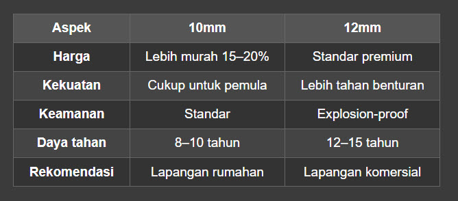
🌱 Rumput Sintetis: Fibrillated vs Monofilament
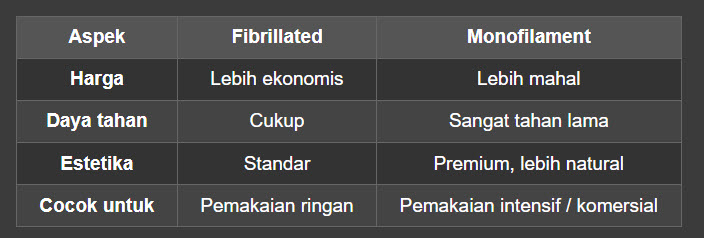
💡 Lampu: LED vs Metal Halide
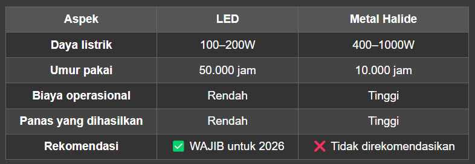
📋 Bab 6: Checklist Persiapan Membangun Lapangan Padel
Gunakan checklist ini agar tidak ada yang terlewat:
✅ Pra-Konstruksi
- [ ] Survei lokasi & studi kelayakan
- [ ] Analisis pasar & kompetitor
- [ ] Desain lapangan & gambar teknis
- [ ] RAB detail
- [ ] Pemilihan kontraktor (minimal 3 pembanding)
- [ ] Pengurusan NIB (OSS RBA)
- [ ] Pengurusan PBG (SIMBG)
- [ ] AMDAL / UKL-UPL / SPPL
- [ ] Izin lingkungan & tetangga
✅ Konstruksi
- [ ] Pembersihan & perataan lahan
- [ ] Pondasi & pengecoran lantai
- [ ] Sistem drainase
- [ ] Struktur baja galvanis
- [ ] Pemasangan kaca tempered
- [ ] Wire mesh & pagar
- [ ] Shockpad & rumput sintetis
- [ ] Pasir silika
- [ ] Lampu LED & instalasi listrik
- [ ] Net & tiang net
- [ ] Marka lapangan
- [ ] Pintu akses
- [ ] Kursi pemain & aksesori
✅ Pasca-Konstruksi
- [ ] Uji coba permainan
- [ ] Pengukuran intensitas cahaya
- [ ] Pembersihan akhir
- [ ] Pengurusan SLF
- [ ] Asuransi bangunan
- [ ] Rekrutmen staf (admin, pelatih, kafe)
- [ ] Strategi pemasaran & grand opening
❓ Bab 7: FAQ — Pertanyaan Paling Sering Ditanyakan
1. Berapa modal minimal untuk membangun 1 lapangan padel?
Modal minimal sekitar Rp 400–500 juta untuk lapangan outdoor standar. Untuk yang premium, siapkan Rp 700 juta – Rp 1,4 miliar.
2. Berapa lama balik modal (ROI)?
Dengan okupansi 60–70%, rata-rata balik modal dalam 2–3 tahun. Beberapa venue premium bisa lebih cepat jika ditunjang F&B dan membership.
3. Berapa ukuran lahan yang dibutuhkan?
Minimal 14m × 24m untuk 1 lapangan (termasuk ruang bebas). Untuk klub dengan 4 lapangan + fasilitas, siapkan minimal 1.000 m².
4. Apakah lebih murah bangun indoor atau outdoor?
Biaya konstruksi outdoor lebih murah (tidak perlu gedung), tapi biaya operasional lebih tinggi (AC untuk indoor). Outdoor juga butuh drainase lebih baik.
5. Izin apa saja yang wajib dimiliki?
NIB, PBG, SLF, dan AMDAL/UKL-UPL/SPPL adalah izin minimal. Tanpa PBG, lapangan bisa disegel!
6. Berapa lama proses pembangunan?
Rata-rata 3–6 bulan dari survei hingga serah terima, tergantung kompleksitas dan cuaca.
7. Apakah bisa pakai kontraktor umum atau harus spesialis?
Sangat disarankan kontraktor spesialis lapangan olahraga yang sudah berpengalaman membangun lapangan padel. Mereka paham standar FIP, teknik pemasangan kaca, dan spesifikasi rumput.
8. Berapa biaya perawatan lapangan per bulan?
Estimasi Rp 5–15 juta per bulan per lapangan, meliputi:
- Pembersihan rumput & kaca
- Penyapuan & perataan pasir silika
- Perawatan lampu LED
- Perbaikan kecil (net, marka, dll.)
9. Apakah lapangan padel bisa dibangun di atap gedung?
Bisa, asalkan struktur gedung mampu menahan beban (beton bertulang, baja, kaca, dan rumput). Konsultasikan dengan ahli struktur sipil.
10. Apa perbedaan lapangan padel indoor dan outdoor?
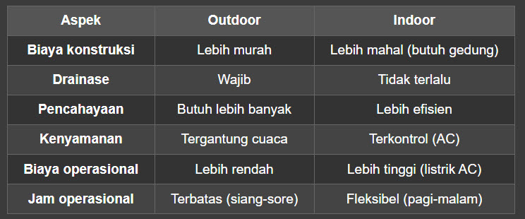
🏁 Bab 8: Kesimpulan & Rekomendasi
Membangun lapangan padel adalah investasi yang sangat menjanjikan di tahun 2026, asalkan dilakukan dengan perencanaan yang matang. Berikut ringkasan poin-poin pentingnya:
✅ 5 Kunci Sukses Bisnis Lapangan Padel
1. Lokasi strategis — Dekat dengan komunitas, akses mudah, zona komersial
2. Kualitas standar internasional — Ukuran, material, pencahayaan sesuai FIP
3. Perizinan lengkap — Jangan sampai kena segel!
4. Ekosistem bisnis — Bukan cuma lapangan, tapi juga kafe, coaching, event, komunitas
5. Manajemen profesional — Staf terlatih, sistem booking online, pemasaran aktif
💡 Rekomendasi Langkah Awal
1. Lakukan riset pasar di lokasi target
2. Konsultasi dengan kontraktor spesialis minimal 3 vendor
3. Siapkan anggaran dengan buffer 15–20% untuk biaya tak terduga
4. Urus perizinan SEBELUM memulai konstruksi
5. Bangun secara bertahap — Mulai dengan 2 lapangan, evaluasi, lalu ekspansi
📞 Butuh Bantuan?
Jika Anda serius ingin membangun lapangan padel dan membutuhkan:
- ✅ Konsultasi desain & RAB
- ✅ Referensi kontraktor terpercaya
- ✅ Panduan perizinan lengkap
- ✅ Studi kelayakan bisnis
Silakan hubungi tim Padelkuktura di No Tlp +6281217481860
Ada pertanyaan spesifik tentang proyek lapangan padel Anda? Tulis di kolom komentar atau hubungi kami. Kami siap membantu mewujudkan investasi Anda! 🎾🏗️